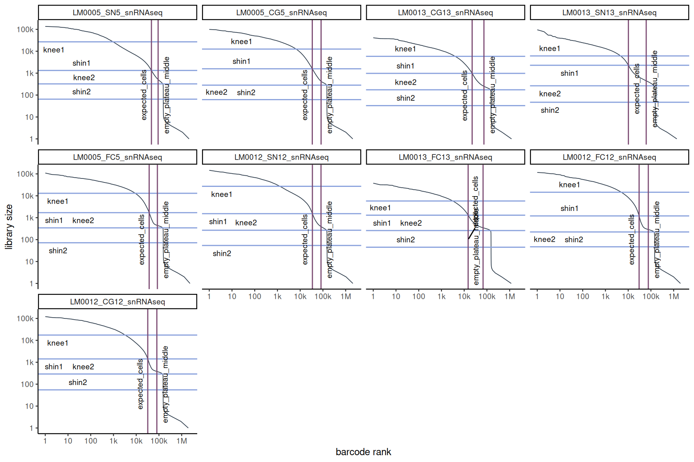
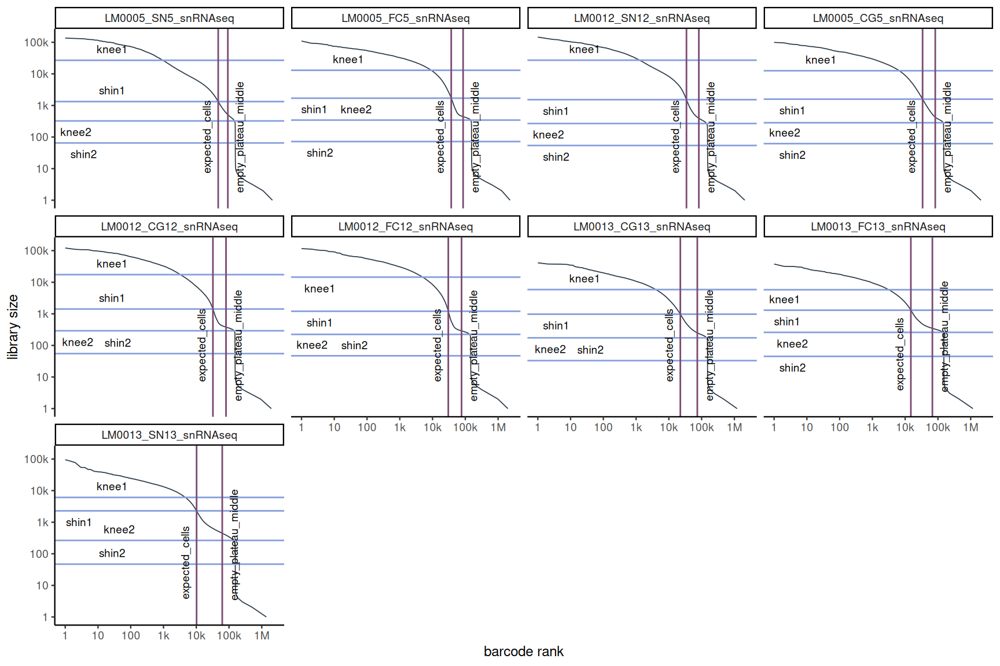
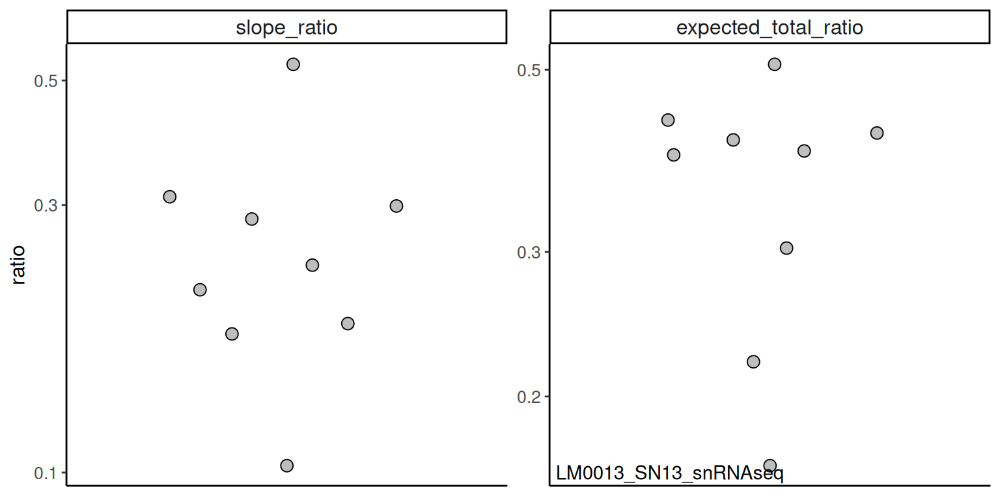
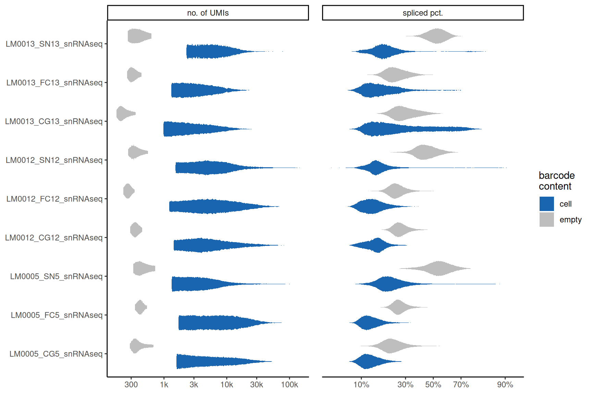

Code
suppressPackageStartupMessages({
library(data.table)
library(ggplot2)
library(ggrepel)
library(ggbeeswarm)
library(ggh4x)
library(magrittr)
library(BiocParallel)
library(strex)
})suppressPackageStartupMessages({
library(data.table)
library(ggplot2)
library(ggrepel)
library(ggbeeswarm)
library(ggh4x)
library(magrittr)
library(BiocParallel)
library(strex)
})knee_fs <- list.files(".", pattern = "^knee_plot_data_.+\\.csv$",
full.names = TRUE, recursive = FALSE)
# exclude v2 files (knee_plot_data_v2_*.csv)
knee_fs <- knee_fs[!grepl("^knee_plot_data_v2_", basename(knee_fs))]
if (length(knee_fs) == 0) stop("No knee_plot_data_*.csv files found")
sample_var <- "sample_id"
ids <- sub("^knee_plot_data_(.+)\\.csv$", "\\1", basename(knee_fs))
knee_fs <- setNames(knee_fs, ids)# ---- per-sample knee parameter summary ----------------------------------------
get_knee_params <- function(knee_f, sample_var) {
ranks_df <- fread(knee_f)
total_thr <- unique(ranks_df$total_droplets_included) %>% log10()
shin1 <- unique(ranks_df$shin1)
shin1_row <- which.min(abs(ranks_df$total - shin1))[1]
shin1_x <- ranks_df[shin1_row, rank] %>% log10()
ranks_df <- ranks_df %>%
.[total > 5] %>%
.[, `:=`(ranks_log = log10(rank), total_log = log10(total))] %>%
unique()
fit <- smooth.spline(x = ranks_df$ranks_log, y = ranks_df$total_log)
d1 <- predict(fit, deriv = 1)
d1_shin <- d1$y[which.min(abs(d1$x - shin1_x))[1]]
d1_total <- d1$y[which.min(abs(d1$x - total_thr))[1]]
keep_cols <- c(sample_var, "knee1", "shin1", "knee2", "shin2",
"total_droplets_included", "expected_cells")
ranks_df[, ..keep_cols] %>%
unique() %>%
.[, `:=`(
slope_shin1 = d1_shin,
slope_total_included = d1_total
)] %>%
.[, `:=`(
slope_ratio = abs(slope_total_included) / abs(slope_shin1),
expected_total_ratio = expected_cells / total_droplets_included
)]
}
rank_at_total <- function(ranks_df, total_threshold) {
ranks_df[which.min(abs(total - total_threshold))[1], rank]
}
# ---- called-cells summary table -----------------------------------------------
get_called_cells_summary <- function(knee_f, sample_var) {
ranks_df <- fread(knee_f)
sid <- unique(ranks_df[[sample_var]])[1]
expected_cells <- as.integer(unique(ranks_df$expected_cells)[1])
total_included <- as.integer(unique(ranks_df$total_droplets_included)[1])
knee1 <- as.integer(unique(ranks_df$knee1)[1])
shin1 <- as.integer(unique(ranks_df$shin1)[1])
knee2 <- as.integer(unique(ranks_df$knee2)[1])
shin2 <- as.integer(unique(ranks_df$shin2)[1])
shin1_rank <- as.integer(rank_at_total(ranks_df, shin1))
knee2_rank <- as.integer(rank_at_total(ranks_df, knee2))
cells_vs_limits <- if (expected_cells <= shin1_rank) {
"within cell-rich region (<= shin1 rank)"
} else if (expected_cells <= total_included) {
"between shin1 and total_droplets_included"
} else if (expected_cells <= knee2_rank) {
"between total_droplets_included and knee2 rank"
} else {
"beyond knee2 rank"
}
data.table(
sample_id = sid,
total_barcodes = nrow(ranks_df),
called_cells = expected_cells,
total_droplets_included = total_included,
called_over_total_pct = 100 * expected_cells / nrow(ranks_df),
knee1 = knee1, shin1 = shin1, knee2 = knee2, shin2 = shin2,
shin1_rank = shin1_rank, knee2_rank = knee2_rank,
cells_vs_limits = cells_vs_limits
)
}
# ---- barcode rank plots --------------------------------------------------------
plot_barcode_ranks_w_params <- function(knee_fs, ambient_knees_df, sample_var,
show_lines = TRUE) {
s_ord <- names(knee_fs)
knee_data <- lapply(s_ord, function(s) {
fread(knee_fs[[s]]) %>%
.[, .(n_bc = .N), by = .(lib_size = total)] %>%
.[order(-lib_size)] %>%
.[, bc_rank := cumsum(n_bc)] %>%
.[, (sample_var) := s]
}) %>% rbindlist()
knee_vars <- c(sample_var, "knee1", "shin1", "knee2", "shin2",
"total_droplets_included", "expected_cells")
lines_knees <- ambient_knees_df %>% as.data.table() %>%
.[get(sample_var) %in% s_ord, ..knee_vars] %>%
setnames("total_droplets_included", "empty_plateau_middle") %>%
melt(id.vars = sample_var) %>%
.[, `:=`(
axis = fifelse(variable %in% c("knee1", "knee2", "shin1", "shin2"), "y", "x"),
type = fifelse(variable %in% c("knee1", "knee2", "shin1", "shin2"),
"intermediate\nparameter", "input\nparameter")
)]
p_labels <- c("1", "10", "100", "1k", "10k", "100k", "1M")
p_breaks <- c(1e0, 1e1, 1e2, 1e3, 1e4, 1e5, 1e6)
knee_data[[sample_var]] <- factor(knee_data[[sample_var]], levels = s_ord)
if (show_lines) lines_knees[[sample_var]] <- factor(lines_knees[[sample_var]], levels = s_ord)
hlines <- lines_knees[axis == "y"]
vlines <- lines_knees[axis == "x"]
p <- ggplot(knee_data) +
aes(x = bc_rank, y = lib_size) +
geom_line(linewidth = 0.3, color = "#283747") +
facet_wrap(~ get(sample_var), ncol = 4) +
scale_x_log10(labels = p_labels, breaks = p_breaks) +
scale_y_log10(labels = p_labels, breaks = p_breaks) +
scale_color_manual(
values = c("#7c4b73", "#88a0dc"),
breaks = c("input\nparameter", "intermediate\nparameter")
) +
theme_classic(base_size = 9) +
theme(legend.position = "none") +
labs(x = "barcode rank", y = "library size", color = NULL)
if (show_lines) {
p <- p +
geom_hline(data = hlines, aes(yintercept = value, color = type)) +
geom_vline(data = vlines, aes(xintercept = value, color = type)) +
geom_text_repel(data = hlines,
aes(y = value, x = 10, label = variable), size = 2.5) +
geom_text_repel(data = vlines,
aes(x = value, y = 100, label = variable),
size = 2.5, angle = 90)
}
p
}
# ---- diagnostic ratios dotplot ------------------------------------------------
find_outlier <- function(x) {
x < quantile(x, 0.25) - 1.5 * IQR(x) | x > quantile(x, 0.75) + 1.5 * IQR(x)
}
plot_amb_params_dotplot <- function(params_qc, sample_var) {
outliers_te <- params_qc$expected_total_ratio %>%
setNames(params_qc[[sample_var]]) %>% log10() %>%
find_outlier() %>% .[.] %>% names()
outliers_slopes <- params_qc$slope_ratio %>%
setNames(params_qc[[sample_var]]) %>% log10() %>%
find_outlier() %>% .[.] %>% names()
keep_cols <- c(sample_var, "slope_ratio", "expected_total_ratio")
plot_df <- params_qc[, ..keep_cols] %>%
melt(id.vars = sample_var) %>%
.[, `:=`(
is.outlier_slope = fifelse(get(sample_var) %in% outliers_slopes, TRUE, FALSE),
is.outlier_te = fifelse(get(sample_var) %in% outliers_te, TRUE, FALSE)
)]
outlier_df_slope <- plot_df[is.outlier_slope == TRUE & variable == "slope_ratio"]
outlier_df_te <- plot_df[is.outlier_te == TRUE & variable == "expected_total_ratio"]
ggplot(plot_df, aes(x = variable, y = value)) +
geom_quasirandom(fill = "grey", shape = 21, size = 3) +
labs(x = NULL, y = "ratio") +
geom_text_repel(data = outlier_df_slope, aes(label = get(sample_var))) +
geom_text_repel(data = outlier_df_te, aes(label = get(sample_var))) +
theme_classic() +
theme(axis.text.x = element_text(size = 12),
axis.text.y = element_text(size = 10),
axis.title.y = element_text(size = 12)) +
scale_y_log10() +
facet_wrap(~variable, scales = "free") +
theme(axis.text.x = element_blank(),
axis.ticks.x = element_blank(),
strip.text = element_text(size = 12))
}
# ---- UMI / splice violin -------------------------------------------------------
plot_qc_metrics_split_by_cells_empties <- function(knee_fs, sample_var = "sample_id",
n_cores = 1) {
bpparam <- MulticoreParam(workers = n_cores, progressbar = FALSE)
plot_dt <- bplapply(knee_fs, function(f) {
fread(f) %>%
.[rank <= expected_cells | in_empty_plateau == TRUE] %>%
.[, `:=`(
umis = log10(total),
splice_pct = qlogis((spliced + 1) / (spliced + unspliced + 2)),
what = fifelse(rank <= expected_cells, "cell", "empty")
)] %>%
.[, c(sample_var, "barcode", "umis", "splice_pct", "what"), with = FALSE]
}, BPPARAM = bpparam) %>%
rbindlist() %>%
melt(id.vars = c(sample_var, "barcode", "what"),
measure.vars = c("umis", "splice_pct"),
variable.name = "qc_metric", value.name = "qc_val") %>%
.[, qc_metric := fcase(
qc_metric == "umis", "no. of UMIs",
qc_metric == "splice_pct", "spliced pct.",
default = NA_character_
)]
umis_brks <- c(1e0,1e1,3e1,1e2,3e2,1e3,3e3,1e4,3e4,1e5,3e5,1e6) %>% log10()
umis_labs <- c("1","10","30","100","300","1k","3k","10k","30k","100k","300k","1M")
splice_brks <- c(0.01,0.03,0.1,0.3,0.5,0.7,0.9,0.97,0.99) %>% qlogis()
splice_labs <- c("1%","3%","10%","30%","50%","70%","90%","97%","99%")
ggplot() +
geom_violin(
data = plot_dt[!is.na(qc_val)],
aes(x = get(sample_var), y = qc_val, fill = what),
colour = NA, kernel = "rectangular", adjust = 0.1, scale = "width", width = 0.8
) +
facet_grid(. ~ qc_metric, scales = "free", space = "free_y") +
facetted_pos_scales(
y = list(
qc_metric == "no. of UMIs" ~ scale_y_continuous(breaks = umis_brks, labels = umis_labs),
qc_metric == "spliced pct." ~ scale_y_continuous(breaks = splice_brks, labels = splice_labs)
)
) +
scale_fill_manual(values = c(cell = "#1965B0", empty = "grey")) +
coord_flip() +
theme_classic() +
labs(x = NULL, y = NULL, fill = "barcode\ncontent") +
theme(panel.spacing = unit(1, "lines"))
}
# ---- layout helpers ------------------------------------------------------------
make_sample_splits <- function(knee_params_df, sample_var, n_per_plot = 12) {
n <- nrow(knee_params_df)
list(
slope = split(knee_params_df[order(-slope_ratio)][[sample_var]],
rep(seq_len(ceiling(n / n_per_plot)), each = n_per_plot, length.out = n)),
exp_tot = split(knee_params_df[order(-expected_total_ratio)][[sample_var]],
rep(seq_len(ceiling(n / n_per_plot)), each = n_per_plot, length.out = n))
)
}
plot_dims <- function(sample_n) {
w <- 9; h <- 6
if (sample_n <= 4) { h <- ceiling(6 * 1/3); w <- ceiling(9 * sample_n / 4) }
else if (sample_n <= 8) { h <- ceiling(6 * 2/3) }
violin_h <- 0.6
max_marg_h <- 14
list(w = w, h = h, marg_h = min((sample_n + 1) * violin_h, max_marg_h))
}knee_params <- lapply(names(knee_fs), function(s)
get_knee_params(knee_fs[[s]], sample_var)) %>% rbindlist()
called_cells <- lapply(names(knee_fs), function(s)
get_called_cells_summary(knee_fs[[s]], sample_var)) %>%
rbindlist(fill = TRUE) %>% .[order(sample_id)]
splits <- make_sample_splits(knee_params, sample_var)
dims <- plot_dims(nrow(knee_params))knitr::kable(called_cells, digits = 2,
caption = "DropletUtils 1.30 — per-sample droplet and called-cell summary")| sample_id | total_barcodes | called_cells | total_droplets_included | called_over_total_pct | knee1 | shin1 | knee2 | shin2 | shin1_rank | knee2_rank | cells_vs_limits |
|---|---|---|---|---|---|---|---|---|---|---|---|
| LM0005_CG5_snRNAseq | 2058315 | 34056 | 82926 | 1.65 | 12573 | 1581 | 284 | 62 | 34056 | 144199 | within cell-rich region (<= shin1 rank) |
| LM0005_FC5_snRNAseq | 2322056 | 37155 | 85569 | 1.60 | 13001 | 1699 | 344 | 72 | 37155 | 145567 | within cell-rich region (<= shin1 rank) |
| LM0005_SN5_snRNAseq | 2113748 | 46791 | 92170 | 2.21 | 26877 | 1326 | 324 | 65 | 46791 | 146610 | within cell-rich region (<= shin1 rank) |
| LM0012_CG12_snRNAseq | 1954297 | 32265 | 81036 | 1.65 | 17430 | 1419 | 291 | 55 | 32265 | 142496 | within cell-rich region (<= shin1 rank) |
| LM0012_FC12_snRNAseq | 1992937 | 30235 | 76779 | 1.52 | 14540 | 1206 | 224 | 47 | 30235 | 135461 | within cell-rich region (<= shin1 rank) |
| LM0012_SN12_snRNAseq | 2076573 | 34459 | 82297 | 1.66 | 27096 | 1528 | 268 | 54 | 34459 | 141974 | within cell-rich region (<= shin1 rank) |
| LM0013_CG13_snRNAseq | 1209572 | 22407 | 73903 | 1.85 | 5855 | 976 | 174 | 33 | 22407 | 141911 | within cell-rich region (<= shin1 rank) |
| LM0013_FC13_snRNAseq | 1174054 | 14934 | 67753 | 1.27 | 5787 | 1302 | 259 | 45 | 14934 | 140959 | within cell-rich region (<= shin1 rank) |
| LM0013_SN13_snRNAseq | 1379712 | 10235 | 62141 | 0.74 | 6107 | 2287 | 265 | 47 | 10235 | 136796 | within cell-rich region (<= shin1 rank) |
for (i in seq_along(splits$slope)) {
s <- splits$slope[[i]]
cat("#### chunk", i, "\n")
suppressWarnings(print(
plot_barcode_ranks_w_params(knee_fs[s], knee_params, sample_var)
))
cat("\n\n")
}
for (i in seq_along(splits$exp_tot)) {
s <- splits$exp_tot[[i]]
cat("#### chunk", i, "\n")
suppressWarnings(print(
plot_barcode_ranks_w_params(knee_fs[s], knee_params, sample_var)
))
cat("\n\n")
}
plot_amb_params_dotplot(knee_params, sample_var)
plot_qc_metrics_split_by_cells_empties(knee_fs, sample_var, n_cores = 1)
devtools::session_info()─ Session info ───────────────────────────────────────────────────────────────
setting value
version R version 4.5.0 (2025-04-11)
os Ubuntu 24.04.2 LTS
system x86_64, linux-gnu
ui X11
language (EN)
collate en_US.UTF-8
ctype en_US.UTF-8
tz Etc/UTC
date 2026-04-15
pandoc 3.1.3 @ /usr/bin/ (via rmarkdown)
quarto 1.7.32 @ /usr/local/bin/quarto
─ Packages ───────────────────────────────────────────────────────────────────
package * version date (UTC) lib source
beeswarm 0.4.0 2021-06-01 [1] RSPM (R 4.5.0)
BiocParallel * 1.44.0 2025-10-29 [1] Bioconductor 3.22 (R 4.5.0)
cachem 1.1.0 2024-05-16 [1] RSPM (R 4.5.0)
cli 3.6.5 2025-04-23 [1] RSPM (R 4.5.0)
codetools 0.2-20 2024-03-31 [2] CRAN (R 4.5.0)
data.table * 1.17.4 2025-05-26 [1] RSPM (R 4.5.0)
devtools 2.5.0 2026-03-14 [1] CRAN (R 4.5.0)
dichromat 2.0-0.1 2022-05-02 [1] RSPM (R 4.5.0)
digest 0.6.37 2024-08-19 [1] RSPM (R 4.5.0)
dplyr 1.1.4 2023-11-17 [1] RSPM (R 4.5.0)
ellipsis 0.3.3 2026-04-04 [1] CRAN (R 4.5.0)
evaluate 1.0.5 2025-08-27 [1] CRAN (R 4.5.0)
farver 2.1.2 2024-05-13 [1] RSPM (R 4.5.0)
fastmap 1.2.0 2024-05-15 [1] RSPM (R 4.5.0)
fs 2.0.1 2026-03-24 [1] CRAN (R 4.5.0)
generics 0.1.4 2025-05-09 [1] RSPM (R 4.5.0)
ggbeeswarm * 0.7.2 2023-04-29 [1] RSPM (R 4.5.0)
ggh4x * 0.3.1 2025-05-30 [1] RSPM (R 4.5.0)
ggplot2 * 3.5.2 2025-04-09 [1] RSPM (R 4.5.0)
ggrepel * 0.9.6 2024-09-07 [1] RSPM (R 4.5.0)
glue 1.8.0 2024-09-30 [1] RSPM (R 4.5.0)
gtable 0.3.6 2024-10-25 [1] RSPM (R 4.5.0)
htmltools 0.5.8.1 2024-04-04 [1] RSPM (R 4.5.0)
htmlwidgets 1.6.4 2023-12-06 [1] RSPM (R 4.5.0)
jsonlite 2.0.0 2025-03-27 [1] RSPM (R 4.5.0)
knitr 1.50 2025-03-16 [1] RSPM (R 4.5.0)
lifecycle 1.0.5 2026-01-08 [1] CRAN (R 4.5.0)
magrittr * 2.0.3 2022-03-30 [1] RSPM (R 4.5.0)
memoise 2.0.1 2021-11-26 [1] RSPM (R 4.5.0)
pillar 1.10.2 2025-04-05 [1] RSPM (R 4.5.0)
pkgbuild 1.4.8 2025-05-26 [1] RSPM (R 4.5.0)
pkgconfig 2.0.3 2019-09-22 [1] RSPM (R 4.5.0)
pkgload 1.5.1 2026-04-01 [1] CRAN (R 4.5.0)
purrr 1.0.4 2025-02-05 [1] RSPM (R 4.5.0)
R6 2.6.1 2025-02-15 [1] RSPM (R 4.5.0)
RColorBrewer 1.1-3 2022-04-03 [1] RSPM (R 4.5.0)
Rcpp 1.0.14 2025-01-12 [1] RSPM (R 4.5.0)
rlang 1.2.0 2026-04-06 [1] CRAN (R 4.5.0)
rmarkdown 2.29 2024-11-04 [1] RSPM (R 4.5.0)
scales 1.4.0 2025-04-24 [1] RSPM (R 4.5.0)
sessioninfo 1.2.3 2025-02-05 [1] CRAN (R 4.5.0)
strex * 2.0.1 2024-10-03 [1] RSPM (R 4.5.0)
stringi 1.8.7 2025-03-27 [1] RSPM (R 4.5.0)
stringr * 1.5.1 2023-11-14 [1] RSPM (R 4.5.0)
tibble 3.3.0 2025-06-08 [1] RSPM (R 4.5.0)
tidyselect 1.2.1 2024-03-11 [1] RSPM (R 4.5.0)
usethis 3.2.1 2025-09-06 [1] CRAN (R 4.5.0)
vctrs 0.6.5 2023-12-01 [1] RSPM (R 4.5.0)
vipor 0.4.7 2023-12-18 [1] RSPM (R 4.5.0)
withr 3.0.2 2024-10-28 [1] RSPM (R 4.5.0)
xfun 0.52 2025-04-02 [1] RSPM (R 4.5.0)
yaml 2.3.10 2024-07-26 [1] RSPM (R 4.5.0)
[1] /usr/local/lib/R/site-library
[2] /usr/local/lib/R/library
* ── Packages attached to the search path.
──────────────────────────────────────────────────────────────────────────────